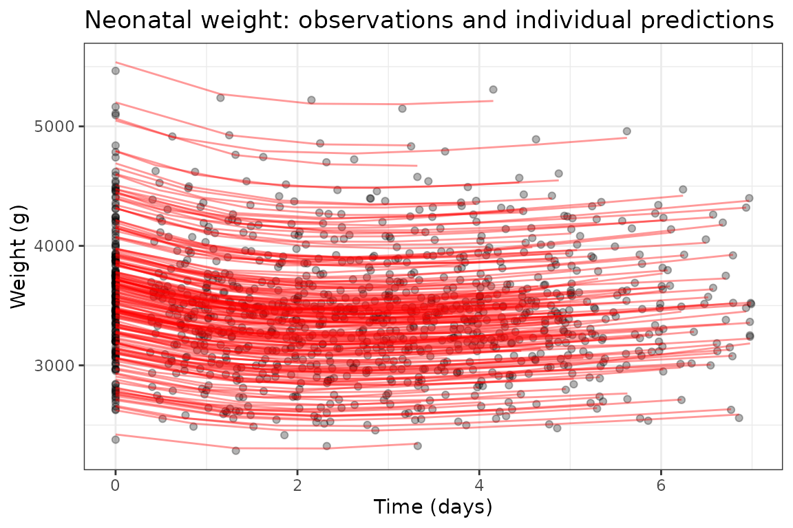

VAE-NLME -- neonatal weight growth with automatic covariate selection
2026-09-18
Source:vignettes/articles/vaeNeonatal.Rmd
vaeNeonatal.RmdThe variational autoencoder estimation method
(est = "vae")
nlmixr2 includes a variational-autoencoder estimator for
nonlinear mixed-effects models, est = "vae". It is a native
reimplementation of the VAE-NLME method of Rohleff et al. (2025), which
performs simultaneous population-parameter estimation and
covariate selection in a single training run. Instead of an
outer optimizer over the population parameters, an amortized encoder
learns each subject’s individual parameters directly from that subject’s
observations, and the population parameters are refreshed by a
stochastic-approximation M-step that also decides – automatically –
which covariates belong in the model.
This article reproduces Case Study 2 from that paper: a neonatal weight-growth model fit to 189 neonates, where the method is expected to discover that gestational age (GA) drives birth weight.
The data
The neonatal_wt data set (from nlmixr2data)
holds serial weight measurements on 189 neonates together with five
candidate subject-level covariates: sex, delivery mode
(DelM), gestational age (GA), maternal age
(Mage) and parity (Para2). This data was
included in the original python implementation and is an open source
simulated dataset.
library(nlmixr2)
neonatal <- nlmixr2data::neonatal_wt
head(neonatal)
#> ID TIME DV EVID Sex DelM GA Mage Para2
#> 1 1 0.000 3101.359 0 0 1 39.77217 28.4113 0
#> 2 1 0.583 3010.934 0 0 1 39.77217 28.4113 0
#> 3 1 1.583 2883.217 0 0 1 39.77217 28.4113 0
#> 4 1 2.583 3019.272 0 0 1 39.77217 28.4113 0
#> 5 1 3.583 2983.498 0 0 1 39.77217 28.4113 0
#> 6 1 4.583 3077.099 0 0 1 39.77217 28.4113 0DV is body weight (grams) over TIME (days).
The covariates are constant within a subject, so the VAE treats them as
candidate predictors of the individual growth parameters.
The model
The growth of weight W follows a turnover model: a
logistic-gated production term kprod and a saturable
elimination term kelim, with the birth weight
W0 as the initial condition. There are five log-linked
structural parameters (W0, kin,
TL, koutmax, T50), each with a
random effect, and a combined additive + proportional error model.
neonatalModel <- function() {
ini({
lW0 <- log(3000)
lkin <- log(30)
lTL <- log(2)
lkoutmax <- log(0.05)
lT50 <- log(1)
eta.W0 ~ 0.001
eta.kin ~ 0.01
eta.TL ~ 0.05
eta.koutmax ~ 0.05
eta.T50 ~ 0.05
add.err <- 30
prop.err <- 0.02
})
model({
W0 <- exp(lW0 + eta.W0)
kin <- exp(lkin + eta.kin)
TL <- exp(lTL + eta.TL)
koutmax <- exp(lkoutmax + eta.koutmax)
T50 <- exp(lT50 + eta.T50)
kprod <- kin * expit(2 * (t - TL))
kelim <- koutmax * (1 - t / (T50 + t))
d/dt(W) <- kprod - kelim * W
W(0) <- W0
W ~ add(add.err) + prop(prop.err)
})
}We do not put any covariate on any parameter:
est = "vae" searches the five candidate covariates against
all five parameters on its own.
Fitting with est = "vae"
The control settings below are deliberately small so the
demonstration runs quickly (this is a cached example – see
Contributing a long-running example for how the :=
cache works); production runs would use the defaults
(itersBurnIn = 100, iters = 300).
sigma0 seeds the encoder’s initial posterior standard
deviations for the five parameters.
ctl <- vaeControl(itersBurnIn = 60L, iters = 120L, klWarmup = 40L,
gammaIter = 90L, nGradStep = 4L, print = 0L,
covariateSelection = TRUE,
sigma0 = c(1e-3, 1e-2, 1e-1, 1e-1, 1e-1))
fit := nlmixr2(neonatalModel, neonatal, est = "vae", control = ctl)
print(fit)
#> ── nlmixr² vae ──
#>
#> OBJF AIC BIC Log-likelihood Condition#(Cov) Condition#(Cor)
#> FOCEi 10812.25 12900.67 12975.98 -6435.334 689215624 1321.413
#> FOCE 10821.03 12909.45 12984.76 -6439.724 689215624 1321.413
#>
#> ── Time (sec $time): ──
#>
#> setup optimize covariance preprocess postprocess table compress
#> elapsed 7.013313 0.0307196 20.47759 0.074 0.054 0.162 0.008
#>
#> ── Population Parameters ($parFixed or $parFixedDf): ──
#>
#> Est. SE %RSE Back-transformed(95%CI) BSV(CV%)
#> lW0 8.18 5.30e-4 0.00648 3580 (3580, 3580) 12.7
#> lkin 4.50 0.0237 0.527 89.9 (85.8, 94.2) 19.3
#> lTL 0.512 0.0287 5.59 1.67 (1.58, 1.77) 13.1
#> lkoutmax -2.65 0.0299 1.12 0.0703 (0.0663, 0.0745) 10.0
#> lT50 0.0202 0.0807 399 1.02 (0.871, 1.20) 15.5
#> add.err 18.0 3.11 17.3 18.0 (11.9, 24.1)
#> prop.err 0.00993 5.56e-4 5.60 0.00993 (0.00884, 0.0110)
#> beta_lW0_SEX 0.0899 4.82e-4 0.536 0.0899 (0.0890, 0.0909)
#> beta_lW0_GA 1.86 0.0115 0.620 1.86 (1.84, 1.88)
#> beta_lkin_GA 1.88 0.289 15.4 1.88 (1.31, 2.45)
#> Shrink(SD)%
#> lW0 0.169
#> lkin 31.6
#> lTL 74.8
#> lkoutmax 52.2
#> lT50 60.2
#> add.err
#> prop.err
#> beta_lW0_SEX
#> beta_lW0_GA
#> beta_lkin_GA
#>
#> Covariance Type ($covMethod): |r|,|s|
#> Some strong fixed parameter correlations exist ($cor) :
#> cor:lkin,lW0 cor:lTL,lW0
#> 0.0432 0.172
#> cor:lkoutmax,lW0 cor:lT50,lW0
#> 0.405 -0.257
#> cor:add.err,lW0 cor:prop.err,lW0
#> 0.107 -0.301
#> cor:beta_lW0_SEX,lW0 cor:beta_lW0_GA,lW0
#> -0.000381 -0.142
#> cor:beta_lkin_GA,lW0 cor:om.eta.W0,lW0
#> 0.168 -0.172
#> cor:om.eta.kin,lW0 cor:om.eta.TL,lW0
#> 0.0969 0.0409
#> cor:om.eta.koutmax,lW0 cor:om.eta.T50,lW0
#> 0.0559 0.0175
#> cor:lTL,lkin cor:lkoutmax,lkin
#> 0.297 -0.476
#> cor:lT50,lkin cor:add.err,lkin
#> 0.691 -0.0434
#> cor:prop.err,lkin cor:beta_lW0_SEX,lkin
#> 0.0277 0.135
#> cor:beta_lW0_GA,lkin cor:beta_lkin_GA,lkin
#> 0.137 -0.0474
#> cor:om.eta.W0,lkin cor:om.eta.kin,lkin
#> 0.142 -0.232
#> cor:om.eta.TL,lkin cor:om.eta.koutmax,lkin
#> -0.421 -0.140
#> cor:om.eta.T50,lkin cor:lkoutmax,lTL
#> -0.0166 -0.298
#> cor:lT50,lTL cor:add.err,lTL
#> 0.143 0.0567
#> cor:prop.err,lTL cor:beta_lW0_SEX,lTL
#> 0.00906 -0.0164
#> cor:beta_lW0_GA,lTL cor:beta_lkin_GA,lTL
#> 0.0265 -0.131
#> cor:om.eta.W0,lTL cor:om.eta.kin,lTL
#> 0.188 0.118
#> cor:om.eta.TL,lTL cor:om.eta.koutmax,lTL
#> -0.354 0.117
#> cor:om.eta.T50,lTL cor:lT50,lkoutmax
#> 0.149 -0.927
#> cor:add.err,lkoutmax cor:prop.err,lkoutmax
#> 0.123 -0.0458
#> cor:beta_lW0_SEX,lkoutmax cor:beta_lW0_GA,lkoutmax
#> -0.0631 -0.342
#> cor:beta_lkin_GA,lkoutmax cor:om.eta.W0,lkoutmax
#> 0.324 -0.224
#> cor:om.eta.kin,lkoutmax cor:om.eta.TL,lkoutmax
#> 0.493 0.607
#> cor:om.eta.koutmax,lkoutmax cor:om.eta.T50,lkoutmax
#> 0.459 0.389
#> cor:add.err,lT50 cor:prop.err,lT50
#> -0.127 0.0297
#> cor:beta_lW0_SEX,lT50 cor:beta_lW0_GA,lT50
#> 0.0918 0.328
#> cor:beta_lkin_GA,lT50 cor:om.eta.W0,lT50
#> -0.270 0.187
#> cor:om.eta.kin,lT50 cor:om.eta.TL,lT50
#> -0.520 -0.569
#> cor:om.eta.koutmax,lT50 cor:om.eta.T50,lT50
#> -0.457 -0.373
#> cor:prop.err,add.err cor:beta_lW0_SEX,add.err
#> -0.832 0.133
#> cor:beta_lW0_GA,add.err cor:beta_lkin_GA,add.err
#> 0.312 -0.208
#> cor:om.eta.W0,add.err cor:om.eta.kin,add.err
#> -0.0372 0.137
#> cor:om.eta.TL,add.err cor:om.eta.koutmax,add.err
#> 0.0136 0.0634
#> cor:om.eta.T50,add.err cor:beta_lW0_SEX,prop.err
#> 0.0409 -0.196
#> cor:beta_lW0_GA,prop.err cor:beta_lkin_GA,prop.err
#> -0.352 0.167
#> cor:om.eta.W0,prop.err cor:om.eta.kin,prop.err
#> 0.151 0.177
#> cor:om.eta.TL,prop.err cor:om.eta.koutmax,prop.err
#> 0.248 0.269
#> cor:om.eta.T50,prop.err cor:beta_lW0_GA,beta_lW0_SEX
#> 0.284 0.0614
#> cor:beta_lkin_GA,beta_lW0_SEX cor:om.eta.W0,beta_lW0_SEX
#> 0.106 -0.0906
#> cor:om.eta.kin,beta_lW0_SEX cor:om.eta.TL,beta_lW0_SEX
#> 0.0301 -0.0236
#> cor:om.eta.koutmax,beta_lW0_SEX cor:om.eta.T50,beta_lW0_SEX
#> -0.0220 0.0287
#> cor:beta_lkin_GA,beta_lW0_GA cor:om.eta.W0,beta_lW0_GA
#> -0.746 -0.0193
#> cor:om.eta.kin,beta_lW0_GA cor:om.eta.TL,beta_lW0_GA
#> -0.190 -0.306
#> cor:om.eta.koutmax,beta_lW0_GA cor:om.eta.T50,beta_lW0_GA
#> -0.293 -0.314
#> cor:om.eta.W0,beta_lkin_GA cor:om.eta.kin,beta_lkin_GA
#> -0.0649 0.123
#> cor:om.eta.TL,beta_lkin_GA cor:om.eta.koutmax,beta_lkin_GA
#> 0.319 0.241
#> cor:om.eta.T50,beta_lkin_GA cor:om.eta.kin,om.eta.W0
#> 0.309 -0.0766
#> cor:om.eta.TL,om.eta.W0 cor:om.eta.koutmax,om.eta.W0
#> -0.154 -0.0882
#> cor:om.eta.T50,om.eta.W0 cor:om.eta.TL,om.eta.kin
#> -0.0670 0.791
#> cor:om.eta.koutmax,om.eta.kin cor:om.eta.T50,om.eta.kin
#> 0.854 0.895
#> cor:om.eta.koutmax,om.eta.TL cor:om.eta.T50,om.eta.TL
#> 0.793 0.777
#> cor:om.eta.T50,om.eta.koutmax
#> 0.947
#>
#>
#> No correlations in between subject variability (BSV) matrix
#> Full BSV covariance ($omega) or correlation ($omegaR; diagonals=SDs)
#> Distribution stats (mean/skewness/kurtosis/p-value) available in $shrink
#> Information about run found ($runInfo):
#> • gradient problems with covariance; see $scaleInfo
#> • since sandwich matrix is corrected, you may compare to $covR or $covS if you wish
#> • S matrix non-positive definite but corrected by S = sqrtm(S%*%S)
#> • R matrix non-positive definite but corrected by R = sqrtm(R%*%R)
#> • encoder: small parallel deviation; parEncoderBackward=FALSE turns off
#> Censoring ($censInformation): No censoring
#> Minimization message ($message):
#> Likelihood evaluation with provided ETAs
#>
#> ── Fit Data (object is a modified tibble): ──
#> # A tibble: 1,120 × 27
#> ID TIME DV PRED RES WRES IPRED IRES IWRES CPRED CRES CWRES
#> <fct> <dbl> <dbl> <dbl> <dbl> <dbl> <dbl> <dbl> <dbl> <dbl> <dbl> <dbl>
#> 1 1 0 3101. 3437. -336. -0.771 3106. -4.66 -0.131 3421. -320. -0.811
#> 2 1 0.583 3011. 3331. -320. -0.758 3015. -3.77 -0.108 3315. -304. -0.797
#> 3 1 1.58 2883. 3240. -356. -0.873 2943. -59.7 -1.74 3225. -342. -0.923
#> # ℹ 1,117 more rows
#> # ℹ 15 more variables: eta.W0 <dbl>, eta.kin <dbl>, eta.TL <dbl>,
#> # eta.koutmax <dbl>, eta.T50 <dbl>, W <dbl>, W0 <dbl>, kin <dbl>, TL <dbl>,
#> # koutmax <dbl>, T50 <dbl>, kprod <dbl>, kelim <dbl>, GA <dbl>, SEX <int>The result: covariate selection
The selected covariate effects are injected directly into the fitted
model, so they appear in the parameter table just like any
hand-specified effect. The canonical result for this case study is a
gestational-age effect on birth weight, which shows up
as a coefficient on the lW0 line.
Injected coefficients are named
beta.<parameter>.<COVARIATE>.<shape>, so
beta.lW0.GA.power is the power-shaped
GA effect on lW0. The name tells you which
parameter carries the effect, which data column it came from, and the
functional form it was written in – all three matter when you compare
coefficients between runs.
# the fitted, covariate-augmented model -- note the centered covariate term
print(fit$ui)
#> ── rxode2-based free-form 1-cmt ODE model ──────────────────────────────────────
#> ── Initalization: ──
#> Fixed Effects ($theta):
#> lW0 lkin lTL lkoutmax lT50 add.err
#> 8.182930493 4.498658110 0.512124480 -2.654852628 0.020230587 17.971475528
#> prop.err beta_lW0_SEX beta_lW0_GA beta_lkin_GA
#> 0.009926208 0.089932758 1.858021667 1.880300012
#>
#> Omega ($omega):
#> eta.W0 eta.kin eta.TL eta.koutmax eta.T50
#> eta.W0 0.01594505 0.00000000 0.00000000 0.000000000 0.00000000
#> eta.kin 0.00000000 0.03674796 0.00000000 0.000000000 0.00000000
#> eta.TL 0.00000000 0.00000000 0.01705157 0.000000000 0.00000000
#> eta.koutmax 0.00000000 0.00000000 0.00000000 0.009944432 0.00000000
#> eta.T50 0.00000000 0.00000000 0.00000000 0.000000000 0.02387728
#>
#> States ($state or $stateDf):
#> Compartment Number Compartment Name
#> 1 1 W
#> ── μ-referencing ($muRefTable): ──
#> theta eta level
#> 1 lW0 eta.W0 id
#> 2 lkin eta.kin id
#> 3 lTL eta.TL id
#> 4 lkoutmax eta.koutmax id
#> 5 lT50 eta.T50 id
#> covariates
#> 1 log(0.0251816572108206 * GA)*beta_lW0_GA + -0.481481481481 + SEX*beta_lW0_SEX
#> 2 log(0.0251816572108206 * GA)*beta_lkin_GA
#> 3
#> 4
#> 5
#>
#> ── Model (Normalized Syntax): ──
#> function() {
#> ini({
#> lW0 <- 8.18293049253
#> lkin <- 4.49865811027
#> lTL <- 0.512124479978
#> lkoutmax <- -2.65485262837
#> lT50 <- 0.020230587301
#> add.err <- c(0, 17.9714755277)
#> prop.err <- c(0, 0.00992620770633)
#> beta_lW0_SEX <- 0.0899327583251
#> beta_lW0_GA <- 1.85802166713
#> beta_lkin_GA <- 1.88030001206
#> eta.W0 ~ 0.0159450547485
#> eta.kin ~ 0.0367479615613
#> eta.TL ~ 0.0170515722265
#> eta.koutmax ~ 0.00994443162136
#> eta.T50 ~ 0.0238772782812
#> })
#> model({
#> W0 <- exp(lW0 + beta_lW0_SEX * (SEX - 0.481481481481) +
#> beta_lW0_GA * log(GA/39.7114451852) + eta.W0)
#> kin <- exp(lkin + beta_lkin_GA * log(GA/39.7114451852) +
#> eta.kin)
#> TL <- exp(lTL + eta.TL)
#> koutmax <- exp(lkoutmax + eta.koutmax)
#> T50 <- exp(lT50 + eta.T50)
#> kprod <- kin * expit(2 * (t - TL), 0, 1)
#> kelim <- koutmax * (1 - t/(T50 + t))
#> d/dt(W) <- kprod - kelim * W
#> W(0) <- W0
#> W ~ add(add.err) + prop(prop.err)
#> })
#> }
# the fixed-effect table, including any selected covariate coefficients
fit$parFixed
#> Est. SE %RSE Back-transformed(95%CI) BSV(CV%)
#> lW0 8.18 5.30e-4 0.00648 3580 (3580, 3580) 12.7
#> lkin 4.50 0.0237 0.527 89.9 (85.8, 94.2) 19.3
#> lTL 0.512 0.0287 5.59 1.67 (1.58, 1.77) 13.1
#> lkoutmax -2.65 0.0299 1.12 0.0703 (0.0663, 0.0745) 10.0
#> lT50 0.0202 0.0807 399 1.02 (0.871, 1.20) 15.5
#> add.err 18.0 3.11 17.3 18.0 (11.9, 24.1)
#> prop.err 0.00993 5.56e-4 5.60 0.00993 (0.00884, 0.0110)
#> beta_lW0_SEX 0.0899 4.82e-4 0.536 0.0899 (0.0890, 0.0909)
#> beta_lW0_GA 1.86 0.0115 0.620 1.86 (1.84, 1.88)
#> beta_lkin_GA 1.88 0.289 15.4 1.88 (1.31, 2.45)
#> Shrink(SD)%
#> lW0 0.169<
#> lkin 31.6>
#> lTL 74.8>
#> lkoutmax 52.2>
#> lT50 60.2>
#> add.err
#> prop.err
#> beta_lW0_SEX
#> beta_lW0_GA
#> beta_lkin_GAA positive GA coefficient means heavier birth weights at
higher gestational age – the expected physiological relationship,
recovered automatically without specifying it up front.
With the settings above the search keeps three
effects, not just that one (see Objective – a deliberate deviation
from the reference in the appendix for the one place
nlmixr2 departs from the paper, and why it is not what
drives this table):
| effect | estimate |
|---|---|
GA on lW0
|
1.858 |
GA on lkin
|
1.880 |
SEX on lW0
|
0.090 |
so gestational age is retained on birth weight and on the
production rate kin, plus a small sex effect on birth
weight. The lW0/GA term is the headline result
– the canonical finding, recovered as expected – but do not read the
search as returning only that: it returns a covariate set, and
every coefficient in it cleared the log(N) BICc
penalty.
The paper’s covariate set is not a comparison target for this
fit. The data used here – nlmixr2data::neonatal_wt
– is the simulated 189-neonate dataset distributed with the
reference implementation, which ships simulated data because the real
cohort cannot be shared. The published Case Study 2 results come from
the real cohort of N = 2425. Comparing a selected covariate set across
those two datasets is not meaningful, so this article does not do it,
and neither should you: the effects recovered here describe this
simulated dataset.
The lW0/GA term is the headline result and
the one that reproduces the canonical finding. The remaining terms
cleared the log(N) BICc penalty on this data; treat them as
a property of the simulated set rather than as a claim about neonatal
physiology.
How covariates are handled
It is worth knowing what the search actually considers, because that determines both what it can find and what a coefficient means.
Which data columns become candidates
Every column that is not a reserved one (ID,
TIME, DV, AMT, EVID
and friends) is examined, and a column qualifies only if it is
- subject-constant – the effect is absorbed as a subject-level shift, so a time-varying column cannot be searched;
- complete and finite for every subject – the M-step is a least-squares fit with no imputation, and the written model has no guard to carry an imputed value to solve time; and
- not a single repeated value, which would duplicate the intercept.
Anything excluded is reported in $runInfo rather than
dropped silently. vaeCovariates() shows the whole candidate
set without running a fit:
vaeCovariates(neonatal)
#> covariate raw shape level group block cluster type
#> 1 SEX SEX cat <NA> 1 1 1 categorical
#> 2 DELM DELM cat <NA> 2 2 2 categorical
#> 3 GA_power GA power <NA> 3 3 3 continuous
#> 4 GA_lin GA lin <NA> 3 4 3 continuous
#> 5 GA_hockeyLow GA hockeyLow <NA> 3 5 3 continuous
#> 6 GA_hockeyHi GA hockeyHi <NA> 3 5 3 continuous
#> 7 MAGE_power MAGE power <NA> 4 6 4 continuous
#> 8 MAGE_lin MAGE lin <NA> 4 7 4 continuous
#> 9 MAGE_hockeyLow MAGE hockeyLow <NA> 4 8 4 continuous
#> 10 MAGE_hockeyHi MAGE hockeyHi <NA> 4 8 4 continuous
#> 11 PARA2 PARA2 cat <NA> 5 9 5 categorical
#> center
#> 1 0.00000
#> 2 0.00000
#> 3 39.83230
#> 4 39.83230
#> 5 39.83230
#> 6 39.83230
#> 7 30.40922
#> 8 30.40922
#> 9 30.40922
#> 10 30.40922
#> 11 0.00000Each row is one search column, not one covariate. A continuous covariate contributes several columns – one per functional form it is allowed to take – and a categorical one contributes an indicator per level.
The three kinds of covariate
- Continuous (more than two distinct values) is centered on its population value, which keeps the structural parameter interpretable as the typical-subject value. The centering statistic is the median by default.
-
Categorical enters as one
0/1indicator per level, with the modal level as reference. A level held by fewer thancatCutoffof the subjects is lumped into the reference rather than given its own coefficient (it would be fit on too few subjects); those are listed in$runInfo. -
A bare
0/1indicator column (such assex,DelMorPara2here) is already in its natural parameterization, so it is left alone – it enters asbeta * COV, its coefficient is the level-1 shift, and the structural parameter stays the reference (COV = 0) value.
Shapes: the functional forms a continuous covariate may take
shapes= controls which parameterizations the search may
try, using the same vocabulary as nlmixr2scm::runSCM().
With ctr the centering value:
| shape | written as | reads as |
|---|---|---|
"power" |
beta * log(COV/ctr) |
allometric; beta is the power on COV
|
"log" |
beta * log(COV) |
same curve, uncentered |
"lin" |
beta * (COV - ctr) |
straight line; beta is change per unit |
"identity" |
beta * COV |
same line, uncentered |
"center" |
beta * (COV/ctr) |
same line, as a fraction of typical |
"hockey" |
beta.low * (COV < ctr) * (COV - ctr)+ beta.hi * (COV >= ctr) * (COV - ctr)
|
two slopes meeting at ctr
|
All six are searched by default.
Two things follow from this table. First, the selection objective is
a least-squares fit with a free intercept, so it only sees the
span of a column: "power" and
"log" describe the same model, as do "lin",
"identity" and "center". Within such a group
the shape decides only how an accepted effect is written back,
and the one you list first in shapes=
wins. Second, at most one shape of a covariate may enter a given
parameter – you never get two competing parameterizations of
the same covariate on one line.
"hockey" is the exception to the first point: it spans a
strictly larger model than the straight-line shapes, because its two
arms bend at the knot instead of sharing one slope. It is
continuous at the knot – both arms vanish there, so the
structural parameter still means the value at ctr – and
both arms enter or neither does. It costs two coefficients where a
linear shape costs one, so the BICc penalty only takes it when the bend
genuinely earns its keep; a covariate whose effect really is a straight
line comes back as "lin". If fewer than
catCutoff of the subjects fall on one side of the knot,
hockey is skipped for that covariate with a note in
$runInfo – normally unreachable, since the median splits
the subjects in half by construction.
How a covariate is chosen
Every candidate column is scored by an L0-penalized least-squares fit
of the encoder’s latent posterior means, with a log(N)
(BICc) penalty per coefficient. A covariate therefore
has to improve the fit by more than it costs, which is what lets the
method reject a spurious effect instead of force-fitting it – and what
makes hockey’s second coefficient a real hurdle rather than a free
upgrade.
When covariates are colinear, or parameters are correlated
Covariate selection gets harder in two situations that are the norm rather than the exception in pharmacometrics: candidate covariates that are correlated with one another (weight, lean body mass, BSA and BMI all measure much the same thing), and individual parameters that are correlated with one another (clearance and volume routinely are). Both push the method toward selecting a covariate that is not the one actually driving the parameter.
It is worth being precise about why, because the obvious explanation is the wrong one.
It is not a search failure
The natural guess is that the search never looked at the other
covariate. It did. The exact branch-and-bound enumerates every feasible
subset, and the L0Learn path re-scores its proposals and
then runs an add / drop / swap local search to convergence. Swapping
weight for lean body mass is a move both engines already consider and
score.
The difficulty is the criterion, not the search. The selection regresses the encoder’s latent posterior means on the candidate columns, so
- the sample size is the number of subjects, not observations – often a few dozen; and
- the response is an estimate that moves, refreshed by the encoder at every training iteration.
When two columns correlate at 0.98, the difference in fit between them is smaller than the iteration-to-iteration movement of the thing being fitted. The exact minimizer of a noisy criterion is still near-arbitrary, and it changes its mind from one iteration to the next. Optimizing harder cannot fix that.
Colinearity clusters
Covariates that are near-interchangeable are grouped into a
colinearity cluster when their absolute correlation
reaches covSelectColinearCut (default 0.9).
Clustering happens at the level of the covariate, not the
search column, so the alternate shapes of one covariate
are never clustered with each other – those are competing
parameterizations of a single covariate and are already arbitrated by
the rule that at most one shape may enter a parameter.
vaeCovariates() shows the clusters straight from the
data, with no fit:
vaeCovariates(neonatal)[, c("covariate", "group", "block", "cluster")]
#> covariate group block cluster
#> 1 SEX 1 1 1
#> 2 DELM 2 2 2
#> 3 GA_power 3 3 3
#> 4 GA_lin 3 4 3
#> 5 GA_hockeyLow 3 5 3
#> 6 GA_hockeyHi 3 5 3
#> 7 MAGE_power 4 6 4
#> 8 MAGE_lin 4 7 4
#> 9 MAGE_hockeyLow 4 8 4
#> 10 MAGE_hockeyHi 4 8 4
#> 11 PARA2 5 9 5On this data every candidate ends up in its own cluster – the
strongest cross-covariate correlation among the neonatal covariates is
about 0.2, so nothing is close to interchangeable and none
of the machinery below engages. A cluster column that
merges two groups is the signal that it will.
The cluster is built from the correlation of the subject-level values – the same one-row-per-subject design the M-step regresses on. You can reproduce it without a fit by correlating the candidate columns:
cand <- vaeCovariates(neonatal)
cols <- names(neonatal)[match(unique(cand$raw), toupper(names(neonatal)))]
round(cor(neonatal[!duplicated(neonatal$ID), cols]), 2)
#> Sex DelM GA Mage Para2
#> Sex 1.00 0.04 -0.05 -0.13 0.09
#> DelM 0.04 1.00 0.20 0.00 -0.07
#> GA -0.05 0.20 1.00 -0.13 0.10
#> Mage -0.13 0.00 -0.13 1.00 0.01
#> Para2 0.09 -0.07 0.10 0.01 1.00Every off-diagonal is well under the 0.9 cut, which is
why cluster repeats group above. Two
covariates whose subject-level values really are near-interchangeable –
weight and lean body mass at 0.98, say – would share one
cluster id instead, and the machinery below would then
treat them as substitutes rather than quietly selecting one and leaving
the other unremarked.
A cluster is a label, never a constraint. It does not stop two correlated covariates from both being selected, and it does not change the objective. It only tells the two mechanisms below which covariates are substitutes for one another.
Stability: not changing your mind without a reason
Within a cluster, the covariate selected on the previous iteration is
not displaced by a mate unless that mate beats it by
covSelectHysteresis (default 0.25), measured
in units of the log(N) selection penalty. A challenger that
wins by less than a quarter of one covariate’s BIC cost has not really
won, and the incumbent stays.
The tolerance is in penalty units rather than as a percentage of the objective on purpose: the objective grows with the number of subjects while the decision scale does not, so a percentage would quietly mean something different in every study.
The effect is that a run settles on an answer instead of alternating between two equally good ones – which also makes the reported result reproducible.
Saying so when the choice was close
Stability is not the same as being right. When the data genuinely cannot distinguish two covariates, what you want is to be told, not to be handed one of them with no indication that the other was equally good.
Cluster mates that scored within covSelectAltTol
(default 0.10 penalty units) of the selected covariate are
recorded on the fit:
fit$vae$colinear$alternates
#> param covariate alternate delta
#> 1 eta.cl WT_power LBM_power 0.031and a one-line note appears in $runInfo. Read that table
as: this analysis selected weight, but lean body mass fit
essentially as well, and the data does not support preferring one over
the other. That is a statement worth having before a covariate goes
into a final model.
Nothing is reported when nothing is close, so the table staying empty is informative too.
Correlated parameters: is the covariate even on the right one?
The second problem is different in kind. Each individual parameter runs its own covariate search, and the coupling between parameters is held fixed while each one searches. So no individual search can see that a covariate assigned to clearance would be better explained on volume, when the two are correlated – that comparison is invisible from inside either search.
When the model declares correlated random effects, a further pass
makes exactly that comparison: for each group of correlated parameters
it tests moving a selected covariate to another parameter in the group,
adding it there, or dropping it, and scores the whole group jointly
rather than one parameter at a time. Parameters are grouped when their
correlation reaches covSelectPhiJoin (default
0.9) and leave the group only below
covSelectPhiLeave (default 0.8), so a
correlation hovering near the threshold does not shuffle the grouping
every iteration.
This pass runs only when the model declares the
correlation, for a reason worth stating plainly: with a
diagonal omega the selection objective separates into one
independent problem per parameter, and each of those is already solved
exactly. There is provably nothing a cross-parameter move could improve.
So on a diagonal model the pass is skipped and $runInfo
says so – if your parameters really are correlated, declaring it is what
lets the method use the fact:
Turning it off
vaeControl(covSelectColinear = FALSE)restores the previous behavior exactly. This is the only supported way to do so – setting the individual thresholds to extreme values is close but not identical.
What it does not do
This machinery makes a near-arbitrary choice stable and visible. It does not make it correct. If two covariates are interchangeable in your data, no selection method can tell you which is mechanistically real; that is a question for the science and, if it matters, for a study designed to separate them. What the fit can now tell you is that the question exists.
Changing the settings
vaeControl(
# which shapes a continuous covariate may take
shapes = c("power", "lin", "log", "identity", "center", "hockey"),
# ... or a per-covariate / per-pair rule set, which also picks the
# covariates to search unless you add fixCov = FALSE; see the next section
covCenterType = "median", # or "mean"; computed over subjects, not rows
covCenter = NULL, # override outright, e.g. c(GA = 40, Mage = 30)
catCutoff = 0.05, # min subject share for a level (and a hockey side)
covSelectMethod = "auto", # "bnb" (exact), "l0learn", or "auto"
covSelectMaxExact = 17L, # search size, in bits, at which "auto" switches
covSelectColinear = TRUE, # the whole colinearity-aware path; FALSE is the
# only supported way back to the old behavior
covSelectColinearCut = 0.9, # |cor| at which two covariates cluster
covSelectHysteresis = 0.25, # margin, in log(N) penalty units, to displace
# the previous iteration's pick within a cluster
covSelectAltTol = 0.1, # window, same units, for reporting near-ties
covSelectPhiCor = "suffStat", # what parameter correlation is measured on
covSelectPhiJoin = 0.9, # |cor| at which two parameters group
covSelectPhiLeave = 0.8, # ... and below which one leaves again
covSelectPhiMaxDim = 4L # largest group the refinement will attempt
)A few notes on the ones whose effect is not obvious from the name:
-
shapesalso takes a list, so different covariates can be searched on different scales – and in that form, naming a covariate is also what puts it in the search. That is involved enough to get its own section below. -
covCentertakes a named numeric vector, so several covariates can be pinned at once (c(GA = 40, Mage = 30)); names are matched case-insensitively, and any covariate you leave out falls back tocovCenterType. It is worth setting when a conventional reference exists (70 kg, 40 weeks) so coefficients are comparable across analyses. It is also the knot for"hockey", which is the one setting that changes where the bend is allowed to occur – so a conventional value far into a tail can push one arm belowcatCutoffand disable hockey for that covariate. HereGA = 40still leaves 43% of the neonates above the knot, so the bend stays searchable. -
covSelectMethodpicks the engine, not the answer."bnb"is an exact branch-and-bound; past roughlycovSelectMaxExactbits of search space it becomes impractical and"auto"hands candidate subsets toL0Learninstead. Those candidates are then re-scored and polished with the same exact objective, so the proposer can never shift a selection on its own – and a non-exact search always says so in$runInfo.
Giving different covariates different shapes
A single character vector is the simple case: it applies to
every parameter/covariate pair, and leaves every
covariate searchable. Real analyses rarely want that – gestational age
has a conventional allometric reading, maternal age does not, and the
parameter the covariate lands on can matter too. shapes=
therefore also takes a rule set, written as a list.
A list holds two kinds of entry, and they mix freely in one list:
-
Named by covariate –
GA = c("power", "hockey"). This is exact shorthand for the covariate-wide pair rule below, which is what keeps it from having semantics of its own. -
Pair rules –
list(var =, covar =, shapes =), innlmixr2scm::runSCM()’spairsVecstyle. Dropvarfor a rule covering a covariate wherever it lands, dropcovarfor one covering a parameter whatever the covariate.
shapes = list(GA = c("power", "hockey"), # named entry
list(var = "lkin", covar = "Mage", shapes = "lin"), # pair rule
Sex = TRUE) # see belowNaming a covariate also puts it in the search
In the list form, listing a covariate is the statement that it
belongs in the search. fixCov = TRUE – the default, given
as an element of the list – fixes the searched set to exactly
the covariates named:
# searches GA and Mage; Sex, DelM and Para2 are not considered at all
vaeControl(shapes = list(GA = c("power", "hockey"), Mage = "lin"))This is the common case made cheap: you list the covariates you care
about and are done, with no per-covariate opt-out to write for the ones
you left out. Every covariate fixCov excludes is named in
$runInfo, so a narrowed search is never silent.
To restrict parameterizations without restricting the search
– so everything not named is still searched, with the default shapes –
add fixCov = FALSE:
# GA is allometric or bent; every other covariate is still searched
vaeControl(shapes = list(GA = c("power", "hockey"), fixCov = FALSE))A character vector names no covariate, so fixCov does
not apply to it and shapes = c("power", "lin") leaves the
whole search intact.
Because a categorical covariate takes no shape, TRUE is
how you name one: Sex = TRUE means “eligible, shapes not
applicable”. It works for a continuous covariate too, where it means
“eligible, with the default shapes”.
Restricting a covariate to particular parameters
A rule that names both var and
covar makes only that pair eligible, so this is also how
you say “search GA on birth weight and the production rate,
and nowhere else” – without writing the effect into the model:
ctlShapes <- vaeControl(
shapes = list(
# 1. GA on birth weight: the canonical effect, plain power model only
list(var = "lW0", covar = "GA", shapes = "power"),
# 2. GA on the production rate: allow the bend, but if the fit comes
# back straight, write it as `lin` rather than as a power
list(var = "lkin", covar = "GA", shapes = c("hockey", "lin")),
# 3. maternal age, wherever it lands, on its own scale
Mage = c("lin", "center"),
# 4. sex is a bare indicator -- eligible, no shape to choose
Sex = TRUE
),
# 40 weeks and 30 years are the conventional references -- and, for GA,
# the knot the hockey arms bend at
covCenter = c(GA = 40, Mage = 30)
)DelM and Para2 are named by no rule, so
under the default fixCov = TRUE they are not searched. That
leaves these eligible pairs:
| parameter | GA |
Mage |
Sex |
|---|---|---|---|
lW0 |
rule 1 – power
|
rule 3 – lin, center
|
rule 4 |
lkin |
rule 2 – hockey, lin
|
rule 3 – lin, center
|
rule 4 |
lTL |
– | rule 3 – lin, center
|
rule 4 |
lkoutmax |
– | rule 3 – lin, center
|
rule 4 |
lT50 |
– | rule 3 – lin, center
|
rule 4 |
GA is confined to two parameters by rules 1 and 2;
Mage and Sex are named without a
var, so they stay eligible on all five.
How the rules are resolved
Eligibility and parameterization are two separate passes.
fixCov decides which cells may be searched at all; the
ladder below then decides what an eligible cell may look like.
The most specific rule wins:
| rule | beats |
|---|---|
var and covar
|
everything below |
covar only |
var-only and a rule naming neither |
var only |
a rule naming neither |
| neither | – |
Ties at the same level go to the last rule listed, so order only matters between rules of equal specificity.
Note that a rule naming neither var nor
covar makes every covariate eligible, which contradicts
fixCov = TRUE; it is an error rather than a silent
contradiction. It is legal under fixCov = FALSE, where it
sets the default shapes for anything the other rules do not claim.
The ladder has one consequence worth stating outright, because it is
the usual surprise: a var-only rule loses to any
covar rule. Adding
list(var = "lT50", shapes = "identity") # weaker than it looksto the rule set above does not make
lT50 uniformly identity. It loses
Mage to rule 3, which names the covariate and is therefore
more specific. A var-only rule reaches only the covariates
nothing else names – to force a shape on a particular pair, name the
pair.
A few more things that are easy to get wrong:
-
Covariate names are case-insensitive (the search
upper-cases data columns), so
covar = "ga"andcovar = "GA"are the same rule. Parameter names are not, but you may use any of the parameter’s aliases: the random-effect name (eta.W0), the mu-referenced theta (lW0) or the bare name (W0) all select the same line. -
Shapes never apply to a categorical covariate, but
fixCovdoes. A rule namingSexcannot change how it enters – it is an indicator, governed bycatCutoff– but naming it is still what keeps it in the search. -
Order within a shape vector decides write-back.
Rule 2 lists
c("hockey", "lin"), which does not prefer hockey – hockey is a separate family and competes on BICc like any other candidate. What the order settles is that a straight-line fit is written aslinrather than asidentityorcenter. -
A requested shape whose family the data cannot support is
not fatal. Ask for
"power"or"log"on a covariate with non-positive values and the covariate stays searchable through the fallback column that does exist, so the restriction does not quietly drop it from the search. -
Under pinning (below)
shapes=is ignored entirely,fixCovincluded. A pinned cell is an effect you wrote, and it is pinned to the shape you wrote it in; intersecting that with ashapes=rule could empty the cell and delete a declared effect, so the declaration wins outright and the disagreement is reported in$runInfo.
Two ways to restrict which pairs are searched
fixCov and pinCovariates both narrow the
search, and they are worth keeping apart:
| you write | the search may | the coefficient is | |
|---|---|---|---|
fixCov (in shapes=) |
a control setting | choose any allowed shape | found by the search |
pinCovariates (the default) |
the effect, in the model | use only the shape you wrote | pinned to your form |
Use fixCov to hand the search a shortlist and let it
work out the form. Use a written effect when the form itself is part of
the hypothesis. Pinning is the default whenever the model declares
covariate effects, and has its own section: Pinning the search to
your model, below.
Pre-specified covariates
(covariateSelection = FALSE)
Automatic selection is the headline feature, but you may already know
which covariate belongs on which parameter and simply want it
estimated. Setting covariateSelection = FALSE
skips the branch-and-bound search and fits only the covariate structure
you wrote into the model. The coefficients are estimated in
place – both linear effects (beta * GA) and
transformed ones written the same centered way selection uses
(beta * log(GA / center)) – rather than held at their
ini() value:
# gestational-age effect on birth weight, written by hand
neonatalFixedCov <- neonatalModel |>
model(W0 <- exp(lW0 + beta.lW0.GA.power * log(GA / 40) + eta.W0)) |>
ini(beta.lW0.GA.power <- 1)
ctl0 <- vaeControl(itersBurnIn = 60L, iters = 120L, klWarmup = 40L,
gammaIter = 90L, nGradStep = 4L, print = 0L,
covariateSelection = FALSE,
sigma0 = c(1e-3, 1e-2, 1e-1, 1e-1, 1e-1))
fit0 <- nlmixr2(neonatalFixedCov, neonatal, est = "vae", control = ctl0)
fit0$parFixed # beta.lW0.GA.power is estimated, not frozenThe coefficients are fit by the same regress M-step that estimates
the non-mu structural thetas, so this holds regardless of the
nonMuTheta setting. A coefficient you deliberately pin with
ini(beta.lW0.GA.power ~ fix(...)) still stays fixed and is
excluded from estimation.
Do you actually need covariateSelection = FALSE?
Often not, and it is worth being clear about why. Writing
covariate effects into the model already restricts the search to
them – that is pinCovariates = TRUE, the default –
so covariateSelection = FALSE is not what makes
the method respect the structure you wrote. Leaving it at
TRUE does that on its own.
What covariateSelection = FALSE adds is that a declared
effect can no longer be rejected: the search is off, so
every coefficient you wrote is estimated and kept, whatever the data
says. Under the default the same pairs are the only ones considered, but
each still has to clear the log(N) BICc penalty, and one
that does not comes back as 0.
So use covariateSelection = FALSE when the model
is the hypothesis and every term must survive – a pre-specified
analysis, a reference model being reproduced, a covariate kept for
regulatory continuity. If instead you want the search confined to a
shortlist you believe in, but still allowed to reject a member of it,
change nothing and just write the effects. Pinning the search to
your model, below, is that case in full; the estimator also differs
between the two, which is the next section.
Why the two paths do not give identical numbers
A natural expectation is that if
covariateSelection = TRUE chooses (say) a single
GA effect on lW0, then re-running with
covariateSelection = FALSE and that same effect
written by hand should reproduce the estimates. It does not – with the
theo_sd example, and in general, the two fits differ, often
noticeably. This is expected: the two paths use different
estimators for the covariate coefficient, not just different
bookkeeping.
-
Selection path (
TRUE). The coefficient is obtained by an ordinary least-squares regression of the encoder’s latent posterior means on the (centered) covariate matrix, in the latentzspace, jointly with the population intercept andomega, every M-step. Because the covariate is part of that regression, the between-subject varianceomegafor that parameter is computed from the covariate-adjusted residual, and the intercept is the typical value after removing the covariate effect. -
Pre-specified path (
FALSE). The coefficient is instead estimated in the M-step against the full FOCEi outer objective – the Laplace determinant,0.5*log|Omega^-1|and the transform Jacobian – with every mu-referenced theta held at its current M-step value, and it only switches on after the KL warmup. The intercept is updated by the plain closed-form mean of the latent means, andomegafor that parameter is formed from the unadjusted spread of the latent means (the covariate is carried in the theta regression instead).
On top of that, a VAE fit is a stochastic, non-convex training run:
the LSTM encoder, omega, the residual error, and the
covariate effect all co-adapt over the Adam + EMA trajectory. The
selection path also ramps an L0 penalty (covSelectAlpha)
over the warmup. Two runs that end on the same covariate set
still travel different trajectories to different local optima. So even
setting the estimator differences aside, exact numerical agreement is
not guaranteed.
Finally, watch the parameterization – but only when
the covariate is not pinned. When it auto-discovers a
covariate, the selection path picks both the shape and the centering
value itself, so a hand-written effect using a different form, or a
different center, puts beta on a different scale and it is
not comparable. vaeCovariates() reports exactly which
columns the search would build and the center it would use for each; the
shape it settled on is in the coefficient’s own name
(beta.lW0.GA.power).
This caveat does not apply to the pinned path (the default): a pinned covariate is searched at its model value, so the centering you wrote – or the one mu2/mu3 referencing already applied – is retained and the coefficient comes back on your scale.
Reconciling the two
By default you do not have to choose between “search everything” and
“estimate my covariates in place.” When a model declares covariates,
pinCovariates = TRUE (the default, described next) keeps
the automatic search but restricts it to the covariates you wrote, so a
pre-specified model is handled by the same selection
machinery – there is nothing to reconcile. Two tips still apply when you
deliberately fall back to the regressor path
(pinCovariates = FALSE, or
covariateSelection = FALSE):
-
Match the parameterization. Write the effect in the
same shape and at the same center the search would use – both are
reported by
vaeCovariates()– so the coefficient is on the same scale. -
Refit deterministically for a path-independent
number. Refit the final covariate-augmented model with a
classical estimator, e.g.
est = "focei", for a well-defined maximum-likelihood coefficient that does not depend on the stochastic VAE trajectory.
Structural parameters with no random effect
(nonMuTheta)
est = "vae" estimates whatever occupies the latent
space, so a structural theta with no random effect needs
separate handling. vaeControl(nonMuTheta=) chooses it; the
two estimating modes both optimize the same full FOCEi
outer objective, holding every mu-referenced theta at its current M-step
value, and differ only in the optimizer:
-
"regress"(default) – a boundedbobyqasearch each M-step. -
"grad"– the exact analytic outer gradient (the Almquist sensitivity machinery behindfoceiControl(fast = TRUE)): one augmented sensitivity solve per M-step replaces the derivative-free sweep.
fitg <- nlmixr2(model, data, est = "vae",
control = vaeControl(nonMuTheta = "grad"))On a one-compartment theo_sd model whose
v <- exp(tv) carries no random effect, against a FOCEi
maximum-likelihood value of tv = 3.4293:
nonMuTheta |
tv |
wall time vs "regress"
|
|---|---|---|
"regress" |
3.4324 | 1.00x |
"grad" |
3.4294 | 1.13x-1.47x slower |
"grad" is also the more natural fit for the method.
Everything else in a VAE run is learned: the encoder weights
are moved by Adam on a gradient, iteration by iteration.
"grad" puts the non-mu theta on that same footing – the
analytic outer gradient is handed to the same Adam machinery, so the
parameter is learned alongside the rest of the model on a shared
schedule (the same gain gamma, the same KL warmup gate).
"regress" instead pauses each M-step to run a separate
derivative-free optimizer to convergence and adopts its answer, which
works but sits outside the training loop rather than inside it.
"grad" is not a speed option – it is
measurably slower, because one augmented solve costs more than a
bobyqa sweep at this size. (The gap narrows as the number
of such thetas grows, since bobyqa’s cost scales in that
count and a single solve does not, but it does not close.) Choose it
when you want the estimate closest to the maximum-likelihood value, or
when you want the parameter learned by the same mechanism as everything
else: an exact gradient beats a derivative-free search on the same
objective.
A single ll() endpoint is in scope. The
analytic outer gradient now covers a generalized log-likelihood endpoint
by differentiating the log-density directly, so
nonMuTheta = "grad" applies to a conditionally Gaussian
model and to a one-endpoint ll() model alike. A model
genuinely outside analytic scope – a multi-endpoint or
censored ll() model, IOV, fo – falls back to
"regress" automatically and says so in
$runInfo.
Pinning the search to your model (pinCovariates, the
default)
There is a third option that usually beats the plain pre-specified
(regressor) path: keep the automatic search on but
pin it to the covariate/parameter pairs you wrote. This
is the default – vaeControl(pinCovariates = TRUE) – and it
activates whenever the model already declares covariate effects:
# GA on birth weight and on the production rate, written by hand -- but let the
# method confirm or drop each one
neonatalPin <- neonatalModel |>
model(W0 <- exp(lW0 + beta.lW0.GA.power * log(GA / 40) + eta.W0)) |>
model(kin <- exp(lkin + beta.lkin.GA.power * log(GA / 40) + eta.kin)) |>
ini(beta.lW0.GA.power <- 1,
beta.lkin.GA.power <- 1)
# pinCovariates = TRUE is the default; shown here for clarity
fitp <- nlmixr2(neonatalPin, neonatal, est = "vae",
control = vaeControl(covariateSelection = TRUE, pinCovariates = TRUE))
fitp$parFixed # each beta is estimated if selected, or reported as 0 if droppedThe BICc branch-and-bound runs, but its candidate set is exactly the
pairs you declared: GA is only ever tested on
lW0 and lkin, never on lTL,
lkoutmax or lT50, and Mage,
Sex, DelM and Para2 cannot enter
at all. $runInfo records it –
covariate selection pinned to model-specified covariates– and the model lines come back written exactly as you wrote them,
log(GA/40) and all, because a pinned pair is allowed only
the column matching its own shape. For the same reason
shapes= is ignored while pinning is
active, fixCov included: a pinned cell is an
effect you wrote, and intersecting it with a shapes= rule
could empty the cell and silently delete that effect, so the declaration
wins outright and the disagreement is reported in
$runInfo.
This is the second way to restrict a covariate to certain parameters.
The other is a var+covar rule in
shapes= (see Two ways to restrict which pairs are
searched): use that when you want the search to pick the functional
form, and a written effect when the form is itself part of what you are
asserting.
Two things are easy to get wrong when writing the model:
-
The
ini()step is not optional. A symbol that appears in a model line but not inini()is taken as a data covariate, not a coefficient. Piping inbeta.lW0.GA.powerwithout promoting it to a population parameter declares no effect at all – and with nothing declared there is nothing to pin, so the full search runs. Check that each coefficient lands in$iniDf. -
One covariate, one encoding. If the same covariate
is declared twice with different centers (
log(GA/40)on one parameter,log(GA/38)on another) the two cannot share a search column: the first declaration claims it and the rest are estimated in place by the regress M-step, noted in$runInfo.
The search may still drop a declared covariate whose
support does not clear the log(N) penalty; when it does,
the returned model keeps your term but sets its coefficient to
0:
| declared effect | after a pinned fit |
|---|---|
beta.lW0.GA.power |
0.0897 – kept |
beta.lT50.Mage.power |
0 – dropped by the search |
So the model you get back is exactly the one you wrote, pruned by the data.
Why pinning is usually better than the regressor path
The regressor path (covariateSelection = FALSE, or
pinCovariates = FALSE when a model declares covariates)
estimates every declared coefficient in place and always keeps
it. Pinning instead reuses the automatic method’s selection
machinery, which gives it three advantages:
-
Parsimony instead of force-fit. The regressor path
has no way to reject a covariate – a weak or spurious effect stays in
the model with a non-zero, noise-fitted coefficient. Pinning applies the
same BICc penalty the automatic search uses, so an unsupported effect is
dropped to
0. You are stating hypotheses and letting the information criterion confirm or reject each, rather than committing to all of them up front. - Consistency with the automatic result. Pinning estimates the slope the same way the unconstrained search does – the latent-space prior regression, same objective and same penalty – so a pinned fit lines up with what the full search would have produced for those pairs. The regressor path uses a different estimator (an M-step optimization of the full outer objective on the structural-theta scale, rather than a least-squares regression in latent space), which is why its numbers still differ from the selection path (see above).
- Cheaper and more stable. The pinned slope is a closed-form regression each M-step; the regressor path runs a bounded optimization against the inner likelihood every M-step, which is heavier and can overshoot on a wide interval.
The regressor path is still the right tool in two cases, and pinning
falls back to it automatically for the first: a
declared covariate whose form the search cannot represent – a
time-varying covariate, or a written form outside the
shape vocabulary, so that the estimated slope would not transfer – is
estimated in place and noted in $runInfo. (Any of
power, lin, log,
identity and center is recognized, so
a plain beta * COV pins to the identity column
rather than falling back.) Use pinCovariates = FALSE
explicitly when you want every declared covariate kept and
estimated with no possibility of being dropped (e.g. an effect you
include on mechanistic grounds).
Scaling covariate selection to many covariates
(covSelectMethod)
The covariate M-step above solves an exact best-subset problem for every latent parameter, every iteration. That is the right thing at the five candidate covariates of this case study, but the branch-and-bound cost grows sharply with the number of candidates on a parameter – a single 30-covariate parameter takes tens of seconds per iteration, and the M-step runs one search per parameter per iteration. Rohleff et al. hit the same wall and suggested switching solvers past roughly 25 covariates.
vaeControl(covSelectMethod=) controls this:
-
"auto"(default) – the exact branch-and-bound for a parameter with fewer thancovSelectMaxExactcandidate covariates (default17, the measured wall-clock crossover), and an L0Learn-accelerated path for one at or above it. The threshold is the candidate count afterpinCovariatestrimming – the size of the search actually run. -
"bnb"– always the exact search. -
"l0learn"– always the accelerated path.
The accelerated path stays exact where it agrees.
The suggested L0Learn package only proposes
candidate subsets (from its L0 and L0L2
regularization paths); nlmixr2 then re-scores every
proposal with the same exact objective
RSS/omega + log(N) * (number of covariates), the same
regression and the same tie-break the branch-and-bound uses, and
improves the winner by an add/drop/swap local search. So
L0Learn’s own scaling and penalty grid cannot change
which subset is selected – they only decide which subsets are
examined. Across a wide range of synthetic problems (including
correlated covariate designs) the accelerated path reproduces the exact
branch-and-bound optimum, at a fraction of the cost – roughly 75x faster
at 25 candidates on a parameter, and far more beyond that.
L0Learn is a suggested dependency. When the
exact search would be impractical but it is not installed, the fit stops
with an error rather than run the slow search silently; install
L0Learn, or set covSelectMaxExact = Inf to
force the exact branch-and-bound everywhere. A fit that used the
accelerated path records it in fit$vae$covSelectMethodUsed
and notes it in $runInfo, so an approximate search is never
silent.
Nothing changes for a model below the threshold – including the neonatal fit in this article, whose five candidates are well under it, so it runs the exact search exactly as before.
Goodness of fit
Because a VAE fit assembles the standard nlmixr2 fit
object (objective function, EBEs, residuals, tables), the usual
diagnostics are available:
library(ggplot2)
ggplot(fit, aes(TIME, DV)) +
geom_point(alpha = 0.3) +
geom_line(aes(y = IPRED, group = ID), colour = "red", alpha = 0.4) +
labs(x = "Time (days)", y = "Weight (g)",
title = "Neonatal weight: observations and individual predictions") +
theme_bw()
How the method works
A VAE-NLME fit alternates three pieces per iteration:
Encoder (LSTM). A single-layer LSTM reads each subject’s observation sequence (and its covariates) and outputs a Gaussian posterior over that subject’s individual parameters – a mean and a Cholesky factor. Individual parameters are drawn by the reparameterization
z = mu + L eps. Innlmixr2the encoder and its exact backward pass are implemented natively in C++ (Armadillo), validated against a Torch autograd oracle.Decoder (the structural model). The sampled individual parameters are pushed through the ODE model to produce predictions. In
nlmixr2the decoder is your ordinaryrxode2model, so any compartment structure, error model, dosing or event handling is supported – not just the hand-coded growth ODE of the reference implementation.Population M-step. A stochastic-approximation update refreshes the population means, the between-subject variances (
omega) and the residual error, and runs the covariate selection. Each latent parameter is regressed on the candidate covariates under an L0 (BICc-style) penaltyRSS/omega + log(N) * (number of covariates);nlmixr2solves this exactly with a dependency-free branch-and-bound (the reference used a commercial MIQP solver). The search order is configurable viavaeControl(bnbStrategy=), though the selected set is identical for every strategy because the solver is exact. The exact search becomes impractical once a single parameter has more than a couple of dozen candidate covariates; for those wide problemsvaeControl(covSelectMethod=)switches to an L0Learn-accelerated path that keeps the scoring exact (see Scaling covariate selection to many covariates).
How gradients reach the encoder: sensitivities vs. autodiff
Both implementations need the decoder’s Jacobian – how each
prediction changes with the individual parameters,
d(pred)/d(z) – to train the encoder, but they obtain it in
fundamentally different ways.
Reference (torchode): reverse-mode automatic differentiation through the solver. The Python prototype integrates the growth ODE with
torchodeunderAutoDiffAdjoint. Every internal solver step is a differentiable Torch operation, so the ELBO gradient is back-propagated through the entire unrolled numerical integration by the autodiff engine. The gradient is that of the discretized solution (“discretize-then-differentiate”); its memory cost grows with the number of solver steps (the whole step graph is retained), and it needs a Torch-differentiable RHS.nlmixr2(rxode2): analytic forward sensitivities.rxode2augments the ODE system with sensitivity equations – extra ODEs ford(state)/d(param)built from symbolically derived Jacobians of the model right-hand side – and integrates them alongside the states in the same solve (“differentiate-then-discretize”). The decoder Jacobian therefore comes out analytically from the model equations rather than by tracing solver arithmetic; its cost scales with the number of parameters (one extra sensitivity block each), it is reused wholesale from the mature FOCEi machinery, and it needs no autodiff graph. (rxode2can also supply these gradients by an adjoint solve, but it is slower; the sensitivity method is chosen automatically.)
Both routes deliver the same quantity – the decoder gradient that informs the encoder update – but one differentiates the numerical algorithm while the other differentiates the mathematical model.
Model features supported by est = "vae"
Because the nlmixr2 VAE runs the structural model
through rxode2 and reuses the FOCEi inner engine for the
likelihood, it inherits most of the modeling features of the rest of the
package – many of which the single-purpose reference prototype does not
have. The table below lists the notable ones, how
est = "vae" handles each, and whether the original Python
implementation had it.
| Feature | How est = "vae" handles it |
In the original? |
|---|---|---|
| Structural model | Any rxode2 model – ODEs, linCmt(),
algebraic predictions, doses/events/resets/lag times – compiled to
C |
No: closed-form or torchode ODE hand-coded per case
study |
| Error models |
add, prop, combined1/2,
add+prop, and transform-both-sides (Box-Cox / Yeo-Johnson);
closed-form residual M-step |
No: fixed sigma = a + b*pred only |
| Censoring (BLQ) | M2 / M3 / M4 via the shared censEst partials in the
inner likelihood |
No |
| Mixture models |
mix() in the model block; the likelihood expands to
nMix x N pseudo-subjects, each component gets its own MAP
eta, and subjects are hard-assigned by argmax (mixnum),
mirroring inner.cpp
|
No: single population |
| Inter-occasion variability (IOV) |
iov ~ v \| occasion; the IOV hook materializes
per-occasion, fixed-variance random effects so that
theta + eta + iov stays mu-referenced. The magnitude is
held at its initial value (a deliberately simple treatment) |
No |
| Non-mu-referenced (“regressive”) thetas | A structural population theta with no
random effect. vaeControl(nonMuTheta=) selects the
treatment: "regress" (default) re-estimates each such theta
every M-step by a bounded bobyqa regression against the
FOCEi inner likelihood (the analogue of SAEM’s
nonMuTheta="regress"); "eta",
"fix", "none" are alternatives |
Partly: the prototype’s population-only branch does a GLS re-solve, but every latent parameter still carries a random effect – there is no no-IIV structural parameter |
| Parameter transforms |
log, logit, probit, identity
(the standard nlmixr2 set) |
No: log only (h = exp) |
| Bounds |
lower/upper on a parameter are enforced by
clamping the M-step estimate to the active bound |
No |
| Fixed parameters | Fixed structural theta (via literalFix),
fixed omega, and fixed residual parameters are respected
and excluded from estimation |
No |
| Correlated random effects | A declared block eta.cl + eta.v ~ c(0.1, 0.01, 0.1) has
its off-diagonals estimated, held at zero for the first
perNoCor of the run so the variances settle first (saem’s
rule). A fixed() covariance is honored throughout. See Correlated random
effects
|
No: diagonal omega only |
| Covariate selection | Exact, dependency-free branch-and-bound over subsets
(bnbStrategy); an L0Learn-accelerated candidate path
(covSelectMethod) keeps the scoring exact on wide covariate
sets |
Yes, but via a commercial MIQP solver (cvxpy +
GUROBI) |
| Multiple endpoints | Supported through the standard multiple-endpoint machinery | No: single endpoint |
| Post-fit object | Full nlmixr2FitData: objective function, standard
errors (covMethod = "analytic"/"r,s"/...), EBEs, CWRES/NPDE
residuals, VPC, tables |
No: prints and plots only |
The three features most specific to mixed-effects modeling – mixtures, IOV and regressive (non-mu) thetas – are worth a note on mechanism:
-
Mixtures are handled entirely inside the
likelihood, not by a separate M-step: the model’s
mix()expands each subject into one pseudo-subject per component, each optimized to its own MAP eta, and the component with the largest posterior weight is chosen (hard assignment). This reuses the same kernel FOCEi/SAEM use, so the mixture probabilities and per-component parameters come out consistently with the other estimation methods. -
IOV is realized by rewriting
iov ~ v | occinto extra per-occasion random effects with fixed unit variance, which keeps the parametertheta + eta + iovmu-referenced and therefore visible to the encoder; the occasion structure comes from the data, not from a bespoke encoder input. -
Regressive thetas cover structural parameters that
should have a typical value but no between-subject variability. Rather
than force a spurious random effect, the default
nonMuTheta = "regress"estimates each such theta by a small bounded regression against the inner likelihood at every M-step, so it converges to its population value without contaminatingomega.
Appendix: full algorithmic comparison with the reference
The two implementations follow the same statistical algorithm with matched default hyperparameters, but differ substantially in engineering. This appendix collects the technical differences.
Architecture at a glance
| Aspect | Python reference (vae_nlme) |
nlmixr2 (est = "vae") |
|---|---|---|
| Role | Research prototype | Production estimation method in the nlmixr2
ecosystem |
| Model definition | Hand-written per case study | Any nlmixr2 UI model, auto-translated via the
rxode2 pipeline |
| Encoder | PyTorch nn.LSTM + nn.Linear, autograd |
Native Armadillo LSTM with exact analytic BPTT, validated vs a Torch oracle to ~1e-6 |
| Decoder | Closed-form solution or torchode solve |
rxode2-compiled C ODE solve (any model / error
model) |
| M-step / covariate selection | Cython class + cvxpy + GUROBI MIQP | C++ exact branch-and-bound, plus an optional
L0Learn candidate path for wide sets (covSelectMethod), no
external solver |
theta with no eta
|
Not representable – every population parameter carries a random effect | The regressor: bounded bobyqa against
the inner likelihood (nonMuTheta) |
| Inner likelihood / EBE | Hand-coded linearization + SciPy Nelder-Mead | Shared FOCEi engine (n1qn1, analytic
Hessian, covMethod) |
| Differentiation | PyTorch autograd throughout | Analytic gradients (encoder BPTT + rxode2
sensitivities) |
Encoder – essentially identical architecture
Both are a single-layer unidirectional LSTM followed
by a fully-connected head that emits, per subject, mu
(z_dim), log_sigma (z_dim
diagonal) and the strictly-lower-triangular entries of the posterior
Cholesky factor L; both form
L = diag(exp(log_sigma)) + strictly_lower(...),
reparameterize z = mu + L eps, and concatenate covariates
to the final hidden state before the FC layer. The FC bias is
initialized so the starting posterior mean / SD equal mu0 /
sigma0. The only real difference is the engine: the
reference relies on Torch autograd, whereas nlmixr2
hand-derives the full LSTM backward pass in Armadillo (removing the
libtorch runtime dependency, at the cost of a fixture-tested analytic
backward).
Decoder – the biggest capability gap
“Capability gap” means this is the single difference that most widens
what each implementation can model – and on that axis the
nlmixr2 / rxode2 decoder is the better one. It
is also the reason for almost every row of the feature table above:
because the decoder is the structural model, whatever the
decoder can represent is exactly what the method can fit.
The reference hard-codes the decoder per case study – an analytic
one-compartment solution for theophylline, a superposition sum for
multiple doses, a torchode-solved growth ODE for neonates.
Each new structural model, dose regimen, or error model needs new
decoder code. nlmixr2 instead compiles whatever model you
wrote to rxode2 C and solves it generically. That one
choice is what unlocks arbitrary compartment structures,
dosing/events/resets, multiple endpoints, any residual-error model,
censoring, and the mature stiff/non-stiff solver suite – none of which
the prototype supports without bespoke code. It also hands back the
decoder Jacobian analytically from the FOCEi sensitivity machinery (see
How gradients reach the encoder), so the same solve that
produces predictions produces exact gradients, and the same solve is
reused to build the final nlmixr2 fit object (objective,
residuals, tables). This is what makes est = "vae" a
general estimation method rather than a per-model script.
To be fair to the reference: its bespoke decoder is not worse for
the one model it targets. A closed-form solution (theophylline)
needs no ODE solve at all, so it is exact and fast for that case; the
rxode2 decoder is more expensive per prediction than a
hand-written closed form. The trade-off is therefore generality and
integration (the FOCEi engine, sensitivities, the whole feature table)
against a small per-model speed edge – and for a package that must fit
any model the general decoder is decisively the right side of
that trade.
What has been done to align with the reference
The implementation has been walked against the reference line by line. Several differences turned out to be defects here rather than choices, and are fixed:
-
The encoder was not conditioned on the covariates.
The reference concatenates them to the LSTM’s final hidden state before
the head that emits the posterior; we passed none. The posterior
therefore could not express a covariate relationship at all. This was
the largest single error – fixing it moved
kin ~ GAfrom 2.45 to 3.51 against the reference’s 3.45 and removed a spurious effect. -
The smoothing gain was off by one iteration
(
1/(1 + iter - gammaIter)against1/(iter - gammaIter)); selectable now asgammaSeries. -
omegawas smoothed twice – formed from EMA sufficient statistics and then blended again;omegaUpdate = "suffStat"matches the reference (andnlmixr2’s own SAEM). -
Encoder-input standardization is computed across
the padded observation matrix by the reference and was computed over
observed values here, a ~3x difference in SD on this data;
inputScaleselects. - The residual model estimated a proportional term the reference fixes at zero, on the variance scale where the reference is SD-additive.
-
sigma0initializes the posterior SD tosigma0here and tosigma0SQUARED in the reference;sigma0Interpselects. -
Per-case-study settings (
alpha = 5,L_iter = 10,h_dim = 50) are the neonatal script’s, not the theophylline defaults this package ships.
Two components were validated against the reference code directly
rather than by reading it: the C++ LSTM reproduces the torch encoder’s
forward pass and analytic backward to 1e-5 (all six gradient tensors),
and the rxode2 decoder reproduces
Decoder_neonates’s torchode solve to 1e-8
relative across all 1120 observations of the shipped dataset. Adam’s
constants, the L0 criterion and the covariate encoding all match.
What remains. The residual error still differs.
Against the reference’s a = 27.899 on the same simulated
data:
| residual estimator | a |
|---|---|
| closed-form moment | 34.892 |
| two-stage ELS | 33.235 |
| analytic outer gradient | 32.459 |
Each refinement moves toward the reference and none arrives.
lW0 agrees to ~1e-3 on the log scale and
omega[W0] to ~0.5%; the disagreement sits in the
weakly-identified parameters (T50, TL). This
fit selects five covariates where the reference’s own run selects eight,
and the residual estimator does not change that – selection is identical
across all three rows.
Since every isolable component now agrees, the working assumption is trajectory divergence: different RNG streams for the reparameterization noise, compounded over 3000 gradient steps in a non-convex problem. That is a hypothesis, not a demonstrated cause.
Objective – a deliberate deviation from the reference
This is the one place nlmixr2 knowingly departs from the
published method, so it is worth stating plainly – and, just as
importantly, bounding.
The reference trains on the plain variational bound,
elbo = p(x|z) + [ p(z) - q(z|x) ]with no Laplace/Hessian term anywhere in training, the M-step, or
covariate selection – the encoder entropy q(z|x) plays that
role, which is the point of a variational method. (slogdet
appears exactly once in the whole reference codebase, inside its
FOCE-style linearization, computed only at the end to report the
OFV/AIC/BIC.)
nlmixr2 follows that exactly for the encoder, the ELBO
training step and the covariate branch-and-bound. It departs in
one place: the M-step for a structural
theta that has no random effect – a
parameter the encoder cannot reach, because it does not occupy the
latent space. There, nlmixr2 scores the regression against
the full FOCEi outer objective: the frozen-eta joint
likelihood plus the Laplace determinant,
0.5*log|Omega^-1| and the DV-transform Jacobian.
The Laplace piece is not decoration. Those unmatched thetas are
exactly the ones that have to be estimated outside the
variational machinery, and the extra term is what makes a
gradient available for them: the analytic outer
gradient differentiates the marginal (Laplace) likelihood, so without
the Laplace term there is nothing for nonMuTheta = "grad"
to differentiate. Dropping the term does not merely change the target –
it removes the option.
vaeControl(mStepObjective = ) exposes both.
"outer" (default) is the behavior above;
"elbo" reproduces the reference’s plain bound. Under
"elbo" the analytic gradient no longer applies, so
nonMuTheta = "grad" is downgraded to "regress"
with a note in $runInfo.
What this does and does not affect. The scope is narrow, and it is worth being precise, because it is easy to over-attribute:
- A model whose structural parameters are all
mu-referenced – including the neonatal model in this article – has no
non-mu theta at all, so the option is a no-op. Running this case study
under
mStepObjective = "elbo"reproduces the default run bit for bit: samezPop, same omegas, same residual error, same selected covariate set. A regression test pins that identity. - The covariate set this article reports is not attributable to the objective deviation, and in any case is not comparable to the published one: this fit uses the simulated 189-neonate dataset shipped with the reference, while the paper’s Case Study 2 uses the real N = 2425 cohort.
- On a model that does carry a non-mu theta the two
objectives do differ. On
theo_sdwithtvwritten without a random effect (FOCEi MLEtv= 3.4293), a short 80-iteration schedule givestv= 3.4360 under"outer"and 3.4214 under"elbo", with"outer"plus the analytic gradient closest at 3.4286.
M-step – same idea, different smoothing point
Both perform a stochastic-approximation update with
a gain gamma that is 1 during the EM phase and decays as
1/(iter - gamma_iter) in the smoothing tail, and both solve
the same L0 objective per latent dimension,
min ||y_k - X beta||^2 + penalty * (number of covariates)
with penalty = alpha_pen * ln(N). The difference is
what is smoothed:
- The reference accumulates SAEM sufficient
statistics (
s1..s4: running means ofmu,mu mu',sum L L', and the residual sum of squares) and derivesz_pop,omega,afrom the smoothed statistics – the classic Kuhn-Lavielle scheme. -
nlmixr2follows that for the latent parameters:covSelectSmoothregresses the smoothed statistic andomegaUpdate = "suffStat"(both defaults) formomegafrom the sufficient statistics and assign it, matching the reference andnlmixr2’s own SAEM.vaeControl(omegaUpdate = "blend")selects the historicnlmixr2path instead, regressing the current iteration’s posterior means and then EMA-smoothing the resulting estimate – so it is smoothed twice.
The two omega updates converge to the same stationary
point but with different per-iteration trajectories. In fact they are
the same update while the gain is 1, which it is for the whole
burn-in and EM phase: assigning a value and blending it in with weight 1
are the same operation. They diverge only once gammaIter
starts decaying the gain, so a short run at default settings shows no
difference between them at all (measured: agreement to ~1e-13,
separating to ~1e-5 once the gain decays).
The residual error is estimated differently, and deliberately
so. The reference carries an EMA on the residual sum of squares
and takes the root afterwards (a = sqrt(s4/nobs)) – a
closed form that exists only because its residual model is a single
scale parameter with the proportional term fixed at zero.
nlmixr2 cannot use that shortcut, because it supports
residual models the reference does not have: add + prop,
pow, lnorm, Box-Cox, Yeo-Johnson, and multiple
endpoints each with their own error model. Several of those have no
closed-form estimator at all. So
vaeControl(residOptimize = "twoStage") (the default)
estimates them by block coordinate descent, the way npag
and SAEM do:
- the non-mu-referenced structural thetas, with the residual
parameters held – driven by
dv - f; - then those held, and the residual parameters optimized against the
same likelihood the fit reports, with the ODE frozen.
Since step 1 fixes
f, only the residual variancerchanges, so the solved states are pinned and re-used – no ODE re-solve, the same trick SAEM uses.
Because that objective goes through the ordinary likelihood,
r comes from the model itself: every error model works with
no special-casing, multiple endpoints are summed across all their
residual contributors, and a transform-both-sides model is transformed
by the model rather than by hand.
The practical difference is large for the models the closed form
cannot reach. On theo_sd, the parameters below were
previously returned at their ini() value – an estimate that
was really just the starting guess:
| residual model | closed form | "twoStage" |
|---|---|---|
boxCox |
181.6 | -29.2 |
lnorm |
26163.2 | 685.5 |
pow |
154.4 | 134.5 |
yeoJohnson |
131.8 | 108.4 |
add + prop |
122.5 | 120.8 |
vaeControl(residOptimize = "moment") restores the
closed-form estimator, which is exactly the optimum for a single
additive error and cheaper there.
nonMuTheta = "grad" takes a third route: the analytic
outer gradient already carries a residual sigma and a
transform-both-sides lambda as its own directions, so the residual
parameters are stepped by the gradient through Adam and the two-stage
path is not used at all. Whether that beats the ELS route is
model-dependent – on the neonatal case study it lands closest to the
reference, while on a theo_sd Box-Cox fit the ELS route is
much better (objective -29.2 against 87.4).
One implementation note worth stating, since it is a trap: a residual
scale parameter is floored strictly above zero. The likelihood floors a
zero variance (a variance r of 0 becomes r =
1) to stay finite, which makes a collapsed residual look
attractive to an optimizer rather than forbidden – a Box-Cox
fit converged to add.err = 0 before that bound existed, and
still beat the closed form on objective value while doing it.
For covariate selection the reference uses a commercial
MIQP (binary indicators, big-M constraints);
nlmixr2 uses an exact branch-and-bound
with an admissible RSS lower-bound prune – provably the same selected
subset, no GUROBI license, and a configurable search order. Because the
branch-and-bound cost grows quickly with the candidate count, a wide
covariate set is instead handled by an L0Learn-backed candidate path
(covSelectMethod) that scores every proposed subset with
the same exact objective – accelerating the search without giving up
exact scoring (see Scaling covariate selection to many
covariates).
Correlated random effects – omega off-diagonals
The reference estimates only the omega diagonal.
nlmixr2 estimates the off-diagonals of a declared
block, so a correlated model
eta.cl + eta.v ~ c(0.1,
0.01, 0.1)is fitted the way saem and the focei family
fit it, rather than silently returning the correlation you started
from.
This is not a case of the reference lacking the information. Its
M-step accumulates the sufficient statistics as full
z_dim x z_dim matrices – s2 (an EMA of
sum_i mu_i mu_i'), s3 (an EMA of
sum_i L_i L_i') and the covariate cross terms – assembles
the complete between-subject covariance, and then discards everything
off the diagonal in the closing line:
.diag() on a 2-D tensor extracts the diagonal,
so omega_pop leaves the M-step as a
length-z_dim vector. Every consumer downstream then assumes
a diagonal: the covariate regression whitens dimension k by
the scalar 1/sqrt(omega_pop[k]), and the fixed-effect GLS
builds its precision as (1/omega_pop).diag().
nlmixr2 keeps those off-diagonals, following its own
SAEM in three respects:
Only declared entries are estimated. The full second moment is masked to the model’s structure, exactly as
saemdoes withGamma2_phi1 = Gamma2_phi1 %*% covstruct1– a correlation you did not write is never introduced, and afixed()covariance is held.Correlations are held at zero early. For the first
perNoCor(default 0.75, thesaemControl()default) of the EM phase only the variances move; the correlations are estimated afterwards. This issaem’snb_correlrule and it exists for the same reason – correlations estimated before the variances have settled are noise that the later iterations must undo. Note the fraction is of the EM phase (min(gammaIter, iters)), not of the whole run, which is what makes it safe: the gain is 1 forit <= gammaIter, so the correlations are released while the gain is still 1 and are estimable the moment they are unfrozen. (est = "emvi"has no comparable unit-gain phase, so it has to restart the off-diagonal gain at release instead – omitting that is not a theoretical concern, it recoveredrho = 0.16against a true 0.75.)-
The covariate regression is a GLS in the full
Omega. Per-dimension whitening by1/sqrt(omega_k)is the correct metric only whenOmegais diagonal; with a block, residuals across dimensions are correlated and that scoring is simply wrong. Each dimension keeps its own exact L0 search – so a selected covariate still belongs to one interpretable parameter – but on an offset response and its conditional variance,min sum_i (r_ik + c_ik)^2 / (1/P_kk), withP = Omega^-1andc_ik = (1/P_kk) sum_{j != k} P_kj r_ij,which is the exact joint objective
sum_i r_i' Omega^-1 r_isolved by coordinate descent over dimensions. For a diagonalOmega,c_ik = 0and1/P_kk = omega_k, recovering the reference expression unchanged.
What this changes for covariate selection
The GLS metric is not only a scoring detail – it can change which covariates are selected, because the L0 objective it feeds is the thing being minimized over subsets.
Concretely, with a declared block the response dimension
k is regressed on is no longer the raw residual but the
residual plus an offset carrying the other dimensions’
information, and the penalty is compared against the conditional
variance 1/P_kk rather than the marginal
omega_k. Two consequences:
- A covariate that looks uninformative for
eta.clon its own can become worth its penalty onceeta.v’s correlated residual is accounted for, and vice versa. The stronger the correlation, the larger the divergence; atrho = 0the offset vanishes,1/P_kk = omega_k, and the selected subset is identical to the diagonal case by construction. - Because
1/P_kk <= omega_kalways (conditioning cannot increase variance – the Schur-complement result), the penalty is weighed against a smaller denominator, so a correlated block is in general more willing to retain a covariate than the same model fitted with the correlation ignored. The gap is not marginal at realistic correlations: atrho = 0.75the conditional variance is 0.44 times the marginal one.
One implementation point worth stating, since getting it wrong would
be invisible in the output: when covSelectMethod uses
L0Learn to propose candidate supports, the
proposals are generated from the same GLS-adjusted response the exact
search then scores. Proposing under the diagonal metric and scoring
under the GLS one would quietly bias the candidate pool – the proposal
step would be answering a different question than the selection
step.
This is also the reason the correlated-omega work touches covariate selection at all. The two are usually independent knobs; here the covariance structure enters the selection objective directly.
A diagonal model is therefore unaffected in every respect; the
machinery only engages when the model declares a block.
est = "emvi" gained the same treatment at the same time –
notably, with viFamily = "fullRank" the per-subject
variational posterior L_i L_i' already carried the
cross-covariance and the population M-step had been discarding it.
Which omega M-step runs, and why there are two
est = "vae" has two omega M-step
branches, and the off-diagonals follow whichever one the diagonal takes.
Which branch runs is decided by covariateSelection,
not by the objective:
| branch | when | diagonal | off-diagonal |
|---|---|---|---|
| covariate M-step | covariateSelection = TRUE |
follows omegaUpdate=
|
follows omegaUpdate=
|
| plain closed-form | covariateSelection = FALSE |
raw posterior moments, gain-blended | same |
Within the covariate branch, vaeControl(omegaUpdate=)
selects between:
-
"suffStat"(default, the reference behavior) –omegais formed from the EMA sufficient statistics and assigned outright. The off-diagonal counterpart is(s2M + cross + s3M)/N, withcross = sum_i (-c_i s_i' - s_i c_i' + c_i c_i')against the smootheds1. -
"blend"(historic) –omegais formed from the raw posterior moments(1/N) sum_i [d_i d_i' + L_i L_i']and blended with the previous value at the M-step gain, so it is smoothed twice.
The plain branch has no omegaUpdate switch: its diagonal
never reads the sufficient statistics, so its off-diagonal is always the
raw-moment, gain-blended form. That pairing is the invariant
that matters – estimating the diagonal from the EMA statistics
while estimating the off-diagonal from raw moments would build one block
out of two different estimators, and the result need not even be
positive definite.
(As noted under M-step, the two
omegaUpdate paths are the same update while the gain is 1,
so they only differ in the smoothing tail.)
One more thing worth stating because it is natural to assume
otherwise: mStepObjective does not enter the omega
update at all. It selects what the non-mu theta M-step
is scored against (the full FOCEi outer objective, or the reference’s
plain ELBO) and gates nonMuTheta = "grad". Omega has a
closed-form EM update from the variational posterior either way, so the
outer objective only matters for the parameters that have no closed
form. An ELBO-only fit and an outer-objective fit use identical omega
machinery – the branch above is chosen by
covariateSelection, and the estimator within it by
omegaUpdate.
The regressor – no counterpart in the reference
The regressor – the bounded bobyqa
optimization against the FOCEi inner likelihood that shows up as
nonMuTheta = "regress" and as the pre-specified covariate
path – is an nlmixr2 addition. The reference has no
equivalent estimator, and could not easily grow one.
In the reference, theta and eta are
welded together one-to-one. The latent dimension count
z_dim is simultaneously the number of population parameters
and the number of random effects: the design matrix starts with an
identity block (C[i, :, :z_dim] = I), so every latent
dimension contributes one typical value, and the closed-form M-step
hands every latent dimension an omega. Two things
follow:
- A parameter without between-subject variability cannot be written down. There is no slot for it. Everything the decoder consumes is a latent coordinate, right down to the ODE initial condition in the neonatal case study.
-
omegacan never reach zero, so it cannot be faked either. The update isomega_k = (1/N) sum_i [ (mu_ik - (C_i theta)_k)^2 + Sigma_i,kk ], whose second term is the encoder’s own posterior variance. Nothing drives that to zero, so a parameter with no real random effect still comes back with a floor-levelomega– and1/omegaappears in the prior, in the covariate regression weights and in the population-mean normal equations, so an exact zero is not representable anyway.
The only reference parameters that genuinely lack an eta
are the covariate coefficients (estimated by the MIQP regression on
latent means, above) and the additive residual a (closed
form). The proportional residual term is hard-coded to zero in the
published code and never estimated.
Why the reference cannot simply take a gradient for such a
parameter. Its encoder emits the absolute individual
parameter, and theta enters only as the center of the KL
prior. A change in theta is therefore absorbed exactly by
the deviation eta = z - theta: the sampled individual
parameter, and with it the decoder prediction and the data-fit term, are
unchanged. The derivative of the data-fit term with respect to
theta is identically zero, so training gradients reach the
encoder alone. A population parameter is only ever moved by the M-step,
and a parameter with no eta has no M-step to be moved
by.
nlmixr2 fills that gap with an explicit estimator rather
than a reparameterization: each such theta is re-optimized
every M-step by a bounded bobyqa against the inner
likelihood on the structural-theta scale, with bounds
taken from ini(), gated to start after the KL warmup (once
the encoder is informative) and blended with the same M-step gain
gamma. That is what makes
nonMuTheta = "regress" the default – a no-random-effect
population parameter is recovered without inventing a spurious random
effect for it. The same machinery estimates model-declared covariate
coefficients when selection is off, which is exactly why those
coefficients differ from the ones the selection path produces (see
Why the two paths do not give identical numbers): one is a
likelihood optimization on the theta scale, the other a least-squares
regression in latent space.
The residual error model differs the same way. The reference has one
closed-form additive update; nlmixr2 solves add,
proportional and combined forms in closed form and leaves anything
outside that family at its current value, which is again a case the
regressor covers.
Likelihood and EBE
The reference computes an FOCE-style linearization objective and an
importance-sampling objective at the end, with per-subject EBEs by SciPy
Nelder-Mead. nlmixr2 exposes these as
vaeControl(likelihood=, objf=, nIsSample=) but routes them
through the shared FOCEi inner engine
(likInner0), so it inherits robust inner optimization,
analytic covariance, censoring and IOV rather than a bespoke
linearization.
Matched defaults
The default schedule is deliberately identical:
itersBurnIn = 100, klWarmup = 50,
gammaIter = 250, iters = 300,
nGradStep = 5, hiddenDim = 25, Adam with
burnInLearningRate = 8e-3 /
learningRate = 5e-3, KL annealing alpha from
0.01 to 1 over klWarmup (burn-in weight
0.001), and a covariate-penalty ramp
covSelectAlpha = 2 down to 1 over klWarmup.
The iteration print labels the phases
Burn in -> KL anneal -> EM -> Smooth.
In short, the prototype is the concise reference for what the
algorithm is; est = "vae" is the general-purpose,
solver-free, ecosystem-integrated realization of it.
References
- Rohleff J, et al. (2025). Variational autoencoders for nonlinear mixed-effects models with automatic covariate selection.
- The reference Python implementation this article reproduces is available at https://github.com/ (see the paper). The neonatal case study corresponds to Case Study 2 in that work.